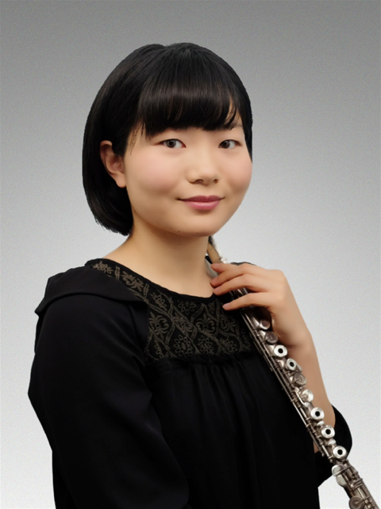

Flute
正木知花 Tomoka Masaki
兵庫県神戸市出身。県立兵庫高等学校、東京藝術大学音楽学部器楽科を経て同大学院音楽研究科修士課程修了。
第9回神戸新人音楽賞コンクール優秀賞。第36回板橋クラシック音楽オーディション最優秀賞。第6回刈谷国際音楽コンクール準グランプリ（最高位）。第21回日本フルートコンヴェンションアルトフルート部門入選。
元東京シティ・フィルハーモニック管弦楽団フルート・ピッコロ奏者。現在はチェコ在住、オーケストラ奏者として活躍中。